Created Friday 05 March 2021 (21-03-05_15-00-19)
@2021 @report
Warmuth, Hannes; Tron, Stefania; Pfefferer, Bianca; Auer, Monica (2020). Raw materials module and manufacturing and secondary raw-materials module for EUCalc. EUCalc project, http://www.european-calculator.eu/documentation/
.\D3.1-Raw-materials-module-and-manufacturing.pdf
The four ambition levels are:
LEVEL 1: Business as usual. This level contains projections that are aligned and coherent with the observed trends of the last 15 years (No TRL below 9).
LEVEL 2: Ambitious but achievable. This level is an intermediate scenario, more ambitious than business as usual but not reaching the full potential of available solutions (No TRL below 9).
LEVEL 3: Very ambitious but achievable. This level is considered very ambitious but realistic, given the current technology evolutions and the best practices observed in some geographical areas (No TRL below 7).
LEVEL 4: Transformational breakthrough. This level is considered transformational and requires additional breakthrough and efforts such as a very fast market uptake of deep measures, an extended deployment of infrastructures, major technological advances, or strong societal changes, etc. (No TRL below 5).
Material switch
27
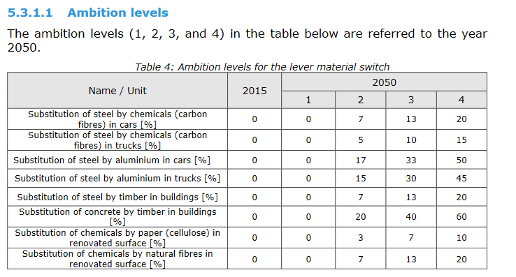
31
Efficiency improvement
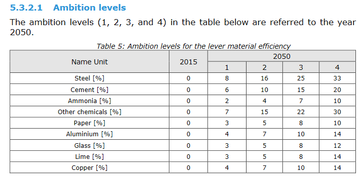
Specific energy consumption & emissions, production
33
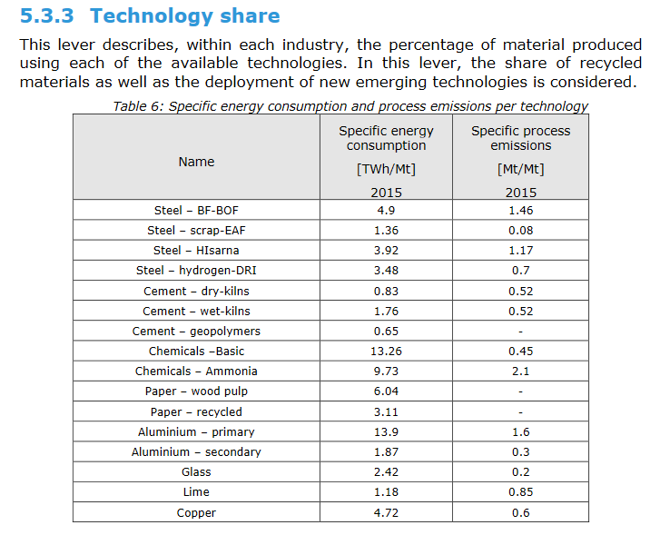
Technology shares at ambition levels
36
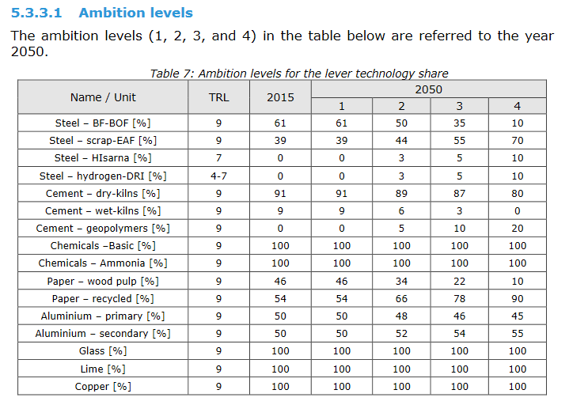
Energy carriers with ambition levels
42-45
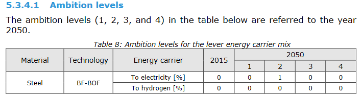
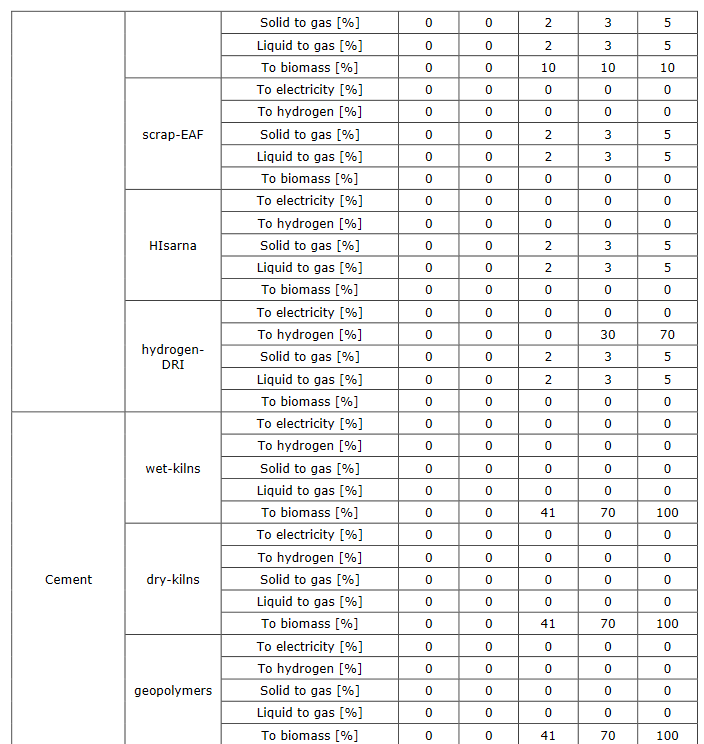
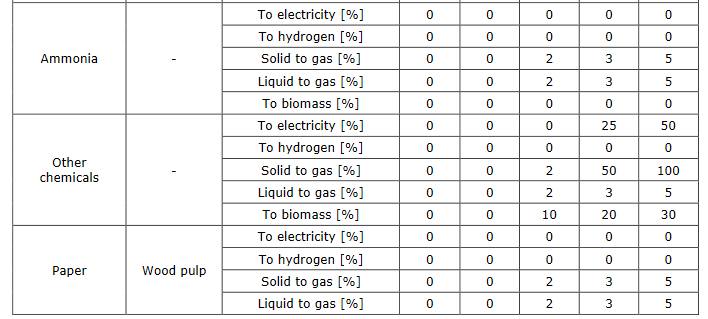
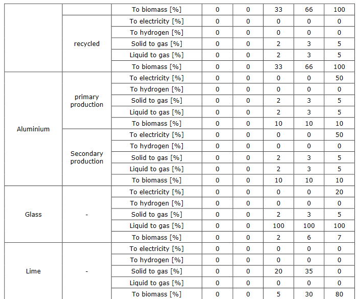
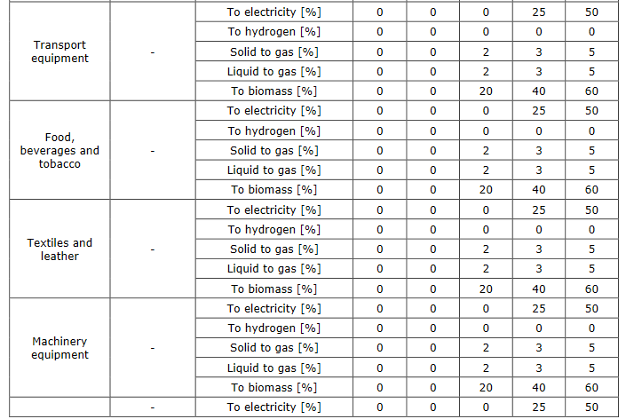
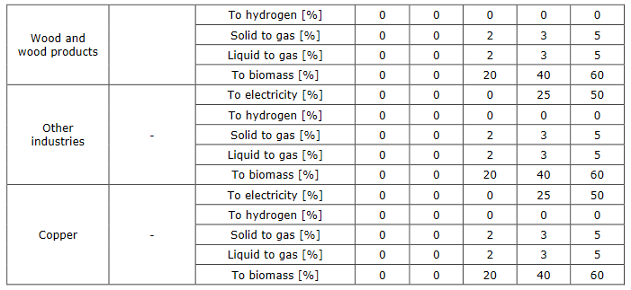
PRODUCT MATERIAL COMPOSITION
57
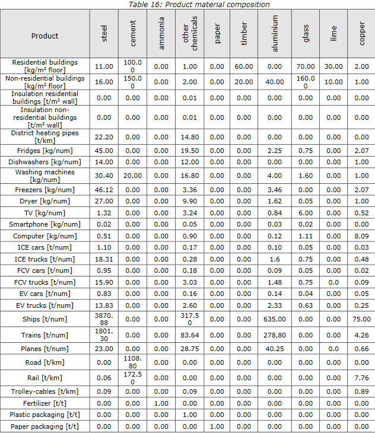
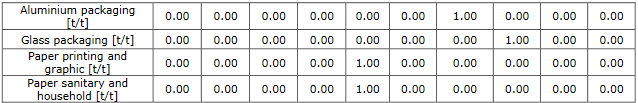
Assumptions and source references
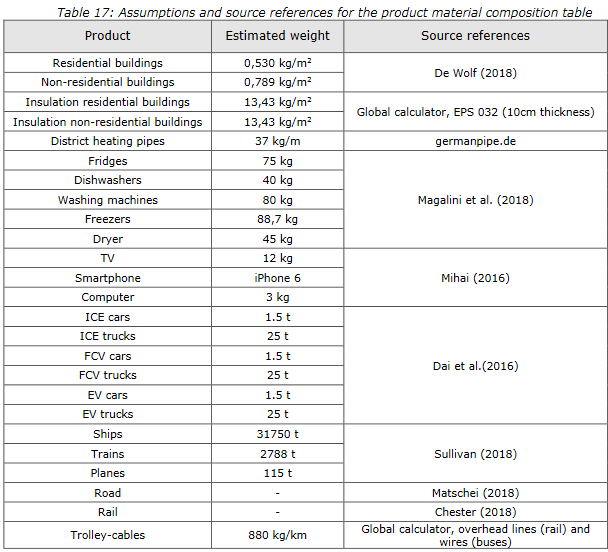
References
Chester MV (2018), Rail Concrete and Steel Use form a Life Cycle Lens, IEA Material Demand Workshop, Paris, 8. Mar 2018
De Wolf C. (2018), Database of embodied quantity outputs, https://www.carbondeqo.com/
Dai Q., J. Kelly and A. Elgowainy (2016), Material Composition of U.S. Light-duty Vehicles
Magalini, F., Kuehr, R., Huisman, J., Deubzer, O., Sinha Khetriwal, D. (2018), Material Flows of the Home Appliance Industry, CECED 2018
Matschei T. (2018), Concrete Roads in Germany case study: Design parameters and challenges, IEA Material Demand Workshop, Paris, 8. Mar 2018
Mihai, F (2016), E-Waste in Transition – From Pollution to Resource, 978-953-51-2499-3, DOI 10.5772/60487
Sullivan JL, GM Lewis, GA Keoleian (2018), Effect of mass on multimodal fuel consumption in moving people and freight in the U.S., Transportation Research Part D: Transport and Environment, Vol. 63
Material switch ratios
59
Material switch ratios are used to calculate the amount of material necessary to replace another material and guarantee the same final functionality of the product. For the material switches in transport the replacement ratios used were proposed by Luk et al. (2017): V:2017:LightweightingVehicles-Luk
- 0.55 kg of aluminium to replace 1 kg of conventional steel in cars and trucks (Fig.1 Luk et al., 2017)
- 0.4 kg of carbon fibres to replace 1 kg of conventional steel in cars and trucks (Fig.1 Luk et al., 2017)
For the material substitution in buildings, no reliable estimates for switch ratios were found in literature. Hence the ratio between specific Young moduli of the materials was used to estimate the material switch ratios (this approach was already used in the Global Calculator). The specific Young modulus indicates the strength property of a material per mass density of the material. Hereafter the adopted material switch ratios:
- 1.08 kg of wood (spruce) to replace 1 kg of steel in buildings (the specific Young modulus of steel is 25 and of spruce 23)
- 5.18 kg of wood (spruce) to replace 1 kg of cement in buildings, assuming 14% of cement per kg of concrete (the specific Young modulus of concrete is 17 and of spruce 23)
This approach could not be used to determine the material switch ratios in insulating materials because the replacement should guarantee the same thermal properties and not the same strength. Due to lack of reliable and robust data in the current model the following material switch ratios are used:
- 1 kg of paper (cellulose) to replace 1 kg of chemicals in renovated surfaces
- 1 kg of natural fibres to replace 1 kg of chemicals in renovated surfaces
{kind=link}
{kind=link}
{kind=link}
{kind=link}
{kind=link}
{kind=link}
{kind=link}
{kind=link}
{kind=link}
{kind=link}
{kind=link}
{kind=link}
{kind=link}